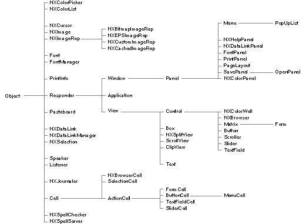

Copyright ©1995 by NeXT Computer, Inc. All Rights Reserved.
| 2 |
Application Kit
| Library: | libNeXT_s.a | |
| Header File Directory: | /NextDeveloper/Headers/appkit | |
| Import: | appkit/appkit.h |
| Introduction |
| The Application Kit defines a set of Objective C classes and protocols, C functions, and assorted constants and data types that are used by virtually every NEXTSTEP application. The pith of the Kit are the tools it provides for implementing a graphical, event-driven user interface: |
| The Application Kit provides classes--most notably Window and View--that make drawing on the screen exquisitely succinct. Much of the unromantic work that's involved in drawing--communicating with hardware devices and screen buffers, clearing areas of the screen before drawing, coordinating overlapping drawing areas--is taken care of for you, letting you concentrate on the much more gratifying task of supplying code that simply draws. And even this task is assisted by many of the other classes and a number of C functions that provide drawing code for you. | ||
| The Application Kit makes event handling extremely simple. The Responder class, from which many of the Kit's classes inherit, defines a mechanism by which the user's actions are passed to the objects in your application that can best respond to them. The Application class, which inherits from Responder, establishes the low-level connections that makes this system possible. It provides methods that inform your application of watershed events, such as when the user makes the application active and inactive, and when the user logs out or turns off the computer. |
| By using these tools, you bless your application with a look and feel that's similar to other applications, making it easier for the user to recognize and use.
Application Kit Classes and Protocols The Application Kit is large; it comprises more than 50 classes and protocols. Figure 1 shows the inheritance hierarchy of the Application Kit classes. The following sections briefly describe the topics that the Kit addresses through its classes and protocols. Within the descriptions, class and protocol names are highlighted as they're introduced for easy identification. |
|  |
| Figure 2-1. Application Kit classes
Encapsulating an Application The central class of the Application Kit is Application. Every application that uses the Application Kit is given a single Application object, known to your program as NXApp, that keeps track of the application's windows and menus, controls the main event loop, lets you open NeXT Interface Builder files (with support from the NXNibNotification protocol), and maintains information regarding printing, languages, screens, color support, and so on.
General Drawing and Event Handling The Window and View classes are the centerpieces of drawing. More specifically, Windows represent rectangular areas on the screen in which the user works. To the extent that everything the user does is directed to a Window, an application's set of Windows is the application. Views are areas within Windows that perform your application's drawing. Panel is a subclass of Window that you use to display transient, global, or pressing information. For example, you would use a Panel, rather than an instance of Window, to display error messages, or to query the user for a response to remarkable or unusual circumstances. The Responder class defines the responder chain, an ordered list of objects that respond to user events. When the user clicks the mouse or presses a key, an event is generated and passed up the responder chain in search of an object that can respond to it.
Menus and Cursors The Menu, MenuCell, and NXCursor classes define the look and behavior of the menus and cursors that your application displays to the user.
Grouping and Scrolling Views The Box, ScrollView, and NXSplitView classes provide graphic accoutrements to some other View or collection of Views. A Box groups some number of other Views, and lets you draw a border around the entire group. NXSplitView lets you "stack" Views vertically, apportioning to each View some amount of a common territory; a sliding control bar lets the user redistribute the territory among Views. ScrollView, and its helper ClipView, provide a scrolling mechanism as well as the graphic objects that let the user initiate and control a scroll.
Controlling an Application The Control and Cell classes, and their subclasses, define an easily recognized set of buttons, sliders, and browsers that the user can manipulate graphically to control some aspect of your application. Just what a particular control affects is up to you: When a control is "touched," it sends a certain message to a specific object. This is the targeted action paradigm; for each Control, you define both the target (an object) and the action (the message that's sent to that object). A Cell completes the implementation of a Control. In general, for each Control there is a corresponding Cell; thus a button comprises a Button and a ButtonCell, a slider is a Slider and SliderCell, and so on.
Text and Fonts Most applications display text in some form. The Text and TextField classes make this presentation as straightforward and simple as possible. The size of the Text class is daunting at first, but for simple text presentation only a handful of methods are actually needed (or you can use the streamlined TextField class). More complicated text-based applications, such as word processors, can take advantage of the Text class' more sophisticated features, such as rulers and break tables. The Font and FontManager encapsulate and manage different font families, sizes, and variations. The Font class defines a single object for each distinct font; for efficiency, these objects, which can be rather large, are shared by all the objects in your application. The FontPanel class defines the font-specification panel that's presented to the user.
Graphics and Color The NXImage, NXImageRep, and the other image representation classes encapsulate graphic data, allowing you to easily and efficiently access images stored in files on the disk. The presentation of an image is greatly influenced by the hardware that it's displayed on. For example, a particular image may look good on a color monitor, but may be too "rich" for monochrome. Through the image classes, you can group representations of the same image, where each representation fits a specific type of display device--the decision of which representation to use can be left to the NXImage class itself. Color is incorporated and supported by NXColorPanel, NXColorList, NXColorPicker, and NXColorWell. These are mostly interface classes: They define and present Panels and Views that allow the user to select and apply colors. The NXColorPicking protocol lets you extend the standard Colors panel. The four standard color formats--RGB, CMYK, HSB, and grayscale--are recognized by the color classes. You can also tell the classes to recognize custom representations.
Printing and Faxing The NXPrinter, PrintPanel, PageLayout, and PrintInfo classes work together to provide the means for printing and faxing the information that your application displays in its Windows and Views. For more control, the View and Window classes and the NXPrintingUserInterface protocol define methods that can fine-tune the printing and faxing mechanism.
Accessing the File System The Application Kit doesn't provide a class that defines objects to correspond to files on the disk. However, the OpenPanel and SavePanel provide a convenient and familiar user interface to the file system.
Sharing Data with Other Applications The Pasteboard class defines a repository for data that's copied from your application, making this data available to any application that cares to use it. This is the familiar cut-copy-paste mechanism. The NXServicesRequest protocol uses the Pasteboard to communicate data that's passed between applications by a registered service. The Listener and Speaker classes provide a more specific communication between separate applications in which one application (using a Speaker) provides data to which the other (through a Listener) is programmed to respond. Finally, an intimate link between applications can be created through the NXDataLink, NXDataLinkManager, NXDataLinkPanel, and NXSelection classes. Through these classes, multiple applications can share the same data. A change to the data in one application is seen immediately in all others that display that data.
Spell-Checking The NXSpellServer class lets you define a spell-checking facility and provide it as a service to other applications. To connect your application to a spelling checker, you use the NXSpellChecker class. The NXSelectText, NXIgnoreMisspelledWords, and NXChangeSpelling protocols support the spell-checking mechanism.
Journaling and Help The NXJournaler class provides an interactive recording and playback environment in which you can run your application. During recording, events are noted, time-stamped, and stored. The journaled "script" can then be played back; your application will run itself to the delight of the assembled throng. The NXHelpPanel class is the central component of the NEXTSTEP help system. It provides a panel that displays the text and illustrations that constitute your application's help information, and it associates user-interface objects with specific passages of that text.
Application Kit Functions The "Functions" section, later in this chapter, describes the functions (and function-like macros) that are provided by the Application Kit. Many of the functions are auxiliary to the Kit's classes in that they augment or are superceded by one or more classes. Of the rest, some functions provide information or functionality that can't be gotten elsewhere, while some others are convenient but not necessarily the only way to address a particular topic. The following sections don't attempt to describe what individual functions do--the names of the functions are fairly descriptive in themselves--they merely list the functions as they fall into broad categories.
Drawing and Graphic Geometry These functions draw standard interface accoutrements, or examine and manipulate graphic regions. |
| NXDrawButton(), NXDrawGrayBezel(), NXDrawGroove(), NXDrawWhiteBezel(), NXDrawTiledRects(), NXFrameRect(), NXFrameRectWithWidth() | ||
| NXAttachPopUpList(), NXCreatePopUpListButton() | ||
| NXRectClip(), NXRectClipList(), NXRectFill(), NXRectFillList(), NXRectFillListWithGrays(), NXEraseRect(), NXHighlightRect() | ||
| NXSetRect(), NXOffsetRect(), NXInsetRect(), NXIntegralRect(), NXDivideRect() | ||
| NXMouseInRect(), NXPointInRect(), NXIntersectsRect(), NXContainsRect(), NXEqualRect(), NXEmptyRect() | ||
| NXUnionRect(), NXIntersectionRect() | ||
| NX_X(), NX_Y(), NX_WIDTH(), NX_HEIGHT(), NX_MAXX(), NX_MAXY(), NX_MIDX(), NX_MIDY() | ||
| NXFindPaperSize() |
| Images
These functions access image data (note, however, that they're superceded by NXImage and related classes). |
| NXCopyBits() |
| Colors
Since there isn't a class that represents individual colors, these function are indispensable for dealing with color. |
| NXSetColor() | ||
| NXColorListName(), NXColorName(), NXFindColorNamed() | ||
| NXReadPixel() | ||
| NXEqualColor() | ||
| NXChangeRedComponent(), NXChangeGreenComponent(), NXChangeBlueComponent(), NXChangeCyanComponent(), NXChangeMagentaComponent(), NXChangeYellowComponent(), NXChangeBlackComponent(), NXChangeHueComponent(), NXChangeSaturationComponent(), NXChangeBrightnessComponent(), NXChangeGrayComponent(), NXChangeAlphaComponent() | ||
| NXConvertColorToRGBA(), NXConvertColorToCMYKA(), NXConvertColorToHSBA(), NXConvertColorToGrayAlpha(), NXConvertColorToRGB(), NXConvertColorToCMYK(), NXConvertColorToHSB(), NXConvertColorToGray() | ||
| NXConvertRGBAToColor(), NXConvertCMYKAToColor(), NXConvertHSBAToColor(), NXConvertGrayAlphaToColor(), NXConvertRGBToColor(), NXConvertCMYKToColor(), NXConvertHSBToColor(), NXConvertGrayToColor() | ||
| NXRedComponent(), NXGreenComponent(), NXBlueComponent(), NXCyanComponent(), NXMagentaComponent(), NXYellowComponent(), NXBlackComponent(), NXHueComponent(), NXSaturationComponent(), NXBrightnessComponent(), NXGrayComponent(), NXAlphaComponent() |
| Text, Fonts, and Characters
These functions let you query and manipulate various aspects of displayed text. |
| NXReadWordTable(), NXWriteWordTable() | ||
| NXScanALine(), NXDrawALine() | ||
| NXFieldFilter(), NXEditorFilter() | ||
| NXTextFontInfo() | ||
| NXOrderStrings(), NXDefaultStringOrderTable() |
| Windows and Screen Devices
Through these functions you can access the Window Server's windows (the devices that underlie Window objects) and retrieve information that aids in matching a Window object to the attributes of the screen upon which it's placed. |
| NXColorSpaceFromDepth(), NXBPSFromDepth(), NXNumberOfColorComponents(), NXGetBestDepth() | ||
| NXConvertWinNumToGlobal(), NXConvertGlobalToWinNum() | ||
| NXCountWindows(), NXWindowList() | ||
| NXGetWindowServerMemory() | ||
| NXSetGState(), NXCopyCurrentGState() |
| Attention Panels
Attention panels are much easier to create through the following functions rather than by creating individual Panel objects. |
| NXRunAlertPanel(), NXRunLocalizedAlertPanel(), NXGetAlertPanel(), NXFreeAlertPanel() |
| Events
These functions let you query for events and provide some control over the events that your application manufactures. |
| NXGetOrPeekEvent() | ||
| NXUserAborted(), NXResetUserAbort() | ||
| NXBeginTimer(), NXEndTimer() | ||
| NXJournalMouse() | ||
| NXPing() |
| The File System and Operating Environment
These functions provide information about the user, manipulate file names, and play the system beep. |
| NXHomeDirectory(), NXUserName() | ||
| NXCompleteFilename() | ||
| NXExpandFilename() | ||
| NXBeep() |
| Pasteboard Functions
These functions access data on the pasteboard: |
| NXCreateFileContentsPboardType(), NXCreateFilenamePboardType() | ||
| NXGetFileType(), NXGetFileTypes() | ||
| NXReadColorFromPasteboard(), NXWriteColorToPasteboard() |
| Archiving
The archiving functions let you read and write individual items (rather than entire objects) from and to files. |
| NXReadPoint(), NXWritePoint(), NXReadRect(), NXWriteRect(), NXReadSize(), NXWriteSize() | ||
| NXReadColor(), NXWriteColor() |
| Named Objects
These functions let you refer to objects by name. |
| NXGetNamedObject(), NXGetObjectName(), NXNameObject(), NXUnnameObject() |
| Services, Data Links, and Remote Messages
These functions assist the services system, data links, and aid in getting data into and from a remote message (a message passed between applications). |
| NXSetServicesMenuItemEnabled(), NXIsServicesMenuItemEnabled() | ||
| NXUpdateDynamicServices() | ||
| NXPerformService() | ||
| NXFrameLinkRect(), NXLinkFrameThickness() | ||
| NXCopyInputData(), NXCopyOutputData() | ||
| NXRemoteMethodFromSel(), NXResponsibleDelegate() | ||
| NXPortFromName(), NXPortNameLookup() |
| Error Handling and Debugging
These functions help you respond to errors and to debug your application. |
| NXDefaultTopLevelErrorHandler(), NXSetTopLevelErrorHandler(), NXTopLevelErrorHandler() | ||
| NXLogError() | ||
| NXRegisterErrorReporter(), NXRemoveErrorReporter(), NXReportError() | ||
| NX_ASSERT() | ||
| NX_PSDEBUG |
| Allocating Memory
These functions let you allocate and free memory. The "chunk" functions are used, principally, by the Text class. |
| NX_MALLOC(), NX_REALLOC(), NX_FREE() | ||
| NX_ZONEMALLOC(), NX_ZONEREALLOC() | ||
| NXChunkMalloc(), NXChunkRealloc(), NXChunkGrow(), NXChunkCopy(), NXChunkZoneMalloc(), NXChunkZoneRealloc(), NXChunkZoneGrow(), NXChunkZoneCopy() |